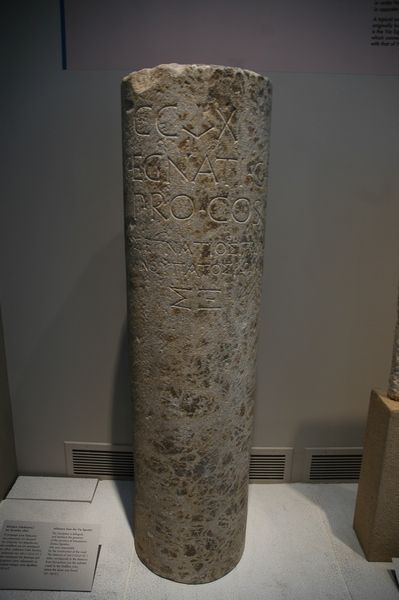
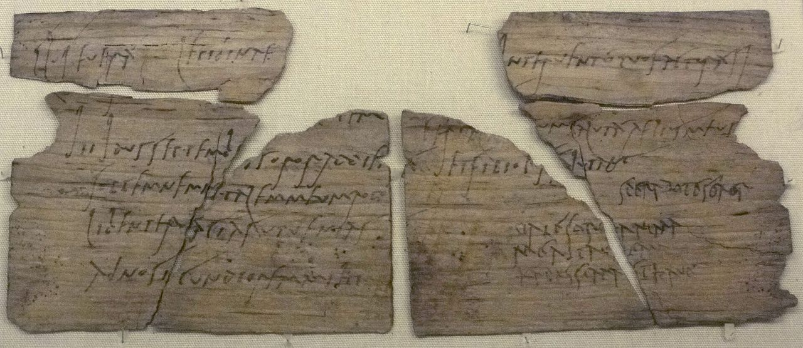

Epafrodito numa miniatura de manuscrito do século XV (Biblioteca Nacional da Rússia)
EBD Jovens · 1º de novembro de 2026 · Filipenses 2.19 a 30
Lição 5Exemplo de servos fiéis: Timóteo e Epafrodito
Gente de confiança
Não havia correio. Cartas, ofertas e notícias viajavam nas mãos de alguém de confiança. Paulo tinha dois.
Para começar
Dá para fazer sozinho?
Construir uma casa inteira.
Ganhar um jogo de vôlei, futebol ou basquete.
Fazer todos os ministérios da igreja.
Como vamos estudar
Sete marcos
Nas estradas romanas, a cada milha havia um marco de pedra dizendo quanto faltava. Hoje a aula é uma estrada com sete marcos.
Paulo acabou de falar de Cristo, que se fez servo (Fp 2.5 a 11). Agora mostra duas pessoas reais que viviam assim: Timóteo e Epafrodito.
Revista, Interação: "a verdadeira liderança cristã não é medida pela posição que ocupamos, mas pela disposição de servir".
1A estradao cenário
2Ninguém serve sozinhoa equipe
3Um igual a mimFp 2.19 a 21
4Como filho ao paiFp 2.22 a 24
5Irmão, cooperador, soldadoFp 2.25
6Angustiado por amorFp 2.26 a 28
7Tende-o em honraFp 2.29 e 30

Miliário da Via Egnatia com o nome de quem construiu a estrada, Cneu Egnácio, e o número CCLX: 260 milhas. Museu Arqueológico de Tessalônica
Marco 1 · A estrada · o cenário
Um marco na estrada
A Via Egnatia foi construída nos anos 140 a.C. e passava por Filipos.
Esta pedra traz o nome do construtor, Cneu Egnácio, e o número CCLX: 260 milhas romanas.
Paulo, Silas, Timóteo e Lucas andaram nessa estrada (At 16.11 a 17.1).
Por ela também passaram, a pé, os mensageiros desta lição.
Marco 1 · De Roma a Filipos
As cinco viagens
Roma → FiliposNotícia: Paulo está preso Fp 1.12 e 13
Filipos → RomaEpafrodito leva a oferta Fp 4.18
Roma → FiliposNotícia: Epafrodito adoeceu Fp 2.26
Filipos → RomaA igreja está aflita Fp 2.26
Roma → FiliposEpafrodito volta, com esta carta Fp 2.25 e 28

Tabuinha de Vindolanda 291 (c. 100 d.C.): convite de aniversário de Cláudia Severa a uma amiga, levado por um mensageiro. Museu Britânico
Marco 1 · A estrada · o cenário
Cartas que andavam a pé
O correio oficial de Roma era só para o governo. Gente comum dependia de amigos e viajantes.
Esta é uma carta de verdade, de por volta de 100 d.C.: o convite de aniversário de Cláudia Severa a uma amiga.
Quem levava a carta precisava ser alguém de confiança: ela chegava junto com o mensageiro.
Epafrodito trouxe a oferta (Fp 4.18) e levou de volta a carta que estamos estudando.
Marco 2 · Ninguém serve sozinho · a equipe
Ninguém serve sozinho
Jesus"E nomeou doze para que estivessem com ele e os mandasse a pregar" (Mc 3.14). Primeiro, estar junto.
PauloEm Romanos 16, ele cita mais de vinte pessoas pelo nome: cooperadores, amigos, anfitriões.
Conexão"A base de qualquer relacionamento saudável [...] é a conexão" (revista, I.1).
Eclesiastes"Se um cair, o outro levanta o seu companheiro; mas ai do que estiver só" (Ec 4.10).
Pense!
Qual o valor de nos relacionarmos bem com as pessoas?
"Não existe vida cristã saudável sem comunhão, cuidado com pessoas e relacionamentos verdadeiros."
Marco 3 · Um igual a mim · Fp 2.19 a 21
"A ninguém tenho de igual sentimento"
"Porque a ninguém tenho de igual sentimento, que sinceramente cuide do vosso estado; porque todos buscam o que é seu e não o que é de Cristo Jesus."Filipenses 2.20 e 21
isópsychos"De alma igual". Só aparece aqui no Novo Testamento.
gnēsíōs"Sinceramente", de verdade. Da família de "filho legítimo".
merimnáō"Cuide": preocupar-se com alguém como se fosse seu.
Marco 3 · Um igual a mim · Fp 2.19 a 21
O que é seu × o que é de Cristo
Fp 2.4"Não atente cada um para o que é propriamente seu, mas cada qual também para o que é dos outros."
Fp 2.21"Porque todos buscam o que é seu e não o que é de Cristo Jesus."
Paulo pediu na lição 3. Aqui mostra quem fazia e quem não fazia.
"Há ministros que [...] o fazem buscando os seus próprios interesses, glória, prestígio e ambição egoísta" (Bíblia de Estudo Pentecostal).
Ícone de Timóteo numa igreja ortodoxa
Marco 4 · Como filho ao pai · Fp 2.22 a 24
Quem era Timóteo
De Listra. Mãe judia crente, pai grego (At 16.1).
A fé "habitou primeiro em tua avó Loide e em tua mãe Eunice" (2Tm 1.5).
Jovem: "ninguém despreze a tua mocidade" (1Tm 4.12).
Assina a carta com Paulo (Fp 1.1) e foi enviado a Tessalônica e Corinto (1Ts 3.2; 1Co 4.17).
Marco 4 · Como filho ao pai · Fp 2.22 a 24
Provado e servo
"Mas bem sabeis qual a sua experiência, e que serviu comigo no evangelho, como filho ao pai."Filipenses 2.22 · texto principal
Experiência · dokimḗCaráter aprovado depois de testado, como metal que passa pelo fogo.
Serviu · douleúōVerbo de escravo. É a mesma raiz da "forma de servo" de Cristo (Fp 2.7).
"Servir antes de liderar": liderança no Reino não é sobre posição, mas sobre serviço (revista, II.3).
Para você
"Ninguém despreze a tua mocidade; mas sê o exemplo dos fiéis."
Em que área você pode ser exemplo agora, sem esperar ficar mais velho? Palavra, trato, amor, espírito, fé, pureza (1Tm 4.12).
Epafrodito numa miniatura de manuscrito do século XV (Biblioteca Nacional da Rússia)
Marco 5 · Irmão, cooperador, soldado · Fp 2.25
Quem era Epafrodito
"Meu irmão, e cooperador, e companheiro nos combates, e vosso enviado para prover às minhas necessidades."Filipenses 2.25
IrmãoadelphósCooperadorsynergósCompanheiro nos combatessystratiṓtēsEnviadoapóstolosPara proverleitourgós
Marco 5 · Irmão, cooperador, soldado · Fp 2.25
Companheiro nos combates
Não some na hora difícil"Muitas vezes encontramos indivíduos que se aproximam quando tudo está bem" (revista, III.2). Epafrodito foi até um preso.
Arão e Hur"Sustentaram as suas mãos, um de um lado, e o outro, do outro; assim ficaram as suas mãos firmes até que o sol se pôs" (Êx 17.12).
Nossas redes sociais servem para difundir o conflito ou para glorificar o nome do Senhor?
Cristo no Getsêmani, de Carl Bloch (século XIX)
Marco 6 · Angustiado por amor · Fp 2.26 a 28
Angustiado por amor
"Tinha muitas saudades de vós todos e estava muito angustiado de que tivésseis ouvido que ele estivera doente."Filipenses 2.26
"Muito angustiado" é adēmonéō. Só aparece três vezes no Novo Testamento.
As outras duas são de Jesus no Getsêmani (Mt 26.37; Mc 14.33).
Epafrodito estava doente, mas a angústia era pela preocupação da igreja.
Marco 6 · Angustiado por amor · Fp 2.26 a 28
"Mas Deus se apiedou dele"
"E, de fato, esteve doente e quase à morte, mas Deus se apiedou dele e não somente dele, mas também de mim, para que eu não tivesse tristeza sobre tristeza."Filipenses 2.27
Servo também adoeceAdoecer servindo não é falta de fé. Paulo também deixou "Trófimo doente em Mileto" (2Tm 4.20).
Paulo não escondeO apóstolo da alegria admite tristeza. Alegria e dor cabem no mesmo coração.
Marco 7 · Tende-o em honra · Fp 2.29 e 30
"Não fazendo caso da vida"
"Porque, pela obra de Cristo, chegou até bem próximo da morte, não fazendo caso da vida, para suprir para comigo a falta do vosso serviço."Filipenses 2.30
"Não fazendo caso da vida" é paraboleúomai: expor-se ao perigo, arriscar. Só aqui no Novo Testamento.
Priscila e Áquila também: "pela minha vida expuseram a sua cabeça" (Rm 16.4).
Séculos depois, cristãos que cuidavam de doentes em epidemias ficaram conhecidos como parabolanos: os que se arriscam.
Marco 7 · O hino na vida real
Cristo, Timóteo e Epafrodito
Cristo (2.4 a 9)
Timóteo
Epafrodito
Não olha só para o que é seu
"Não atente cada um para o que é propriamente seu" (2.4)
"Todos buscam o que é seu", menos Timóteo (2.20 e 21)
Deixou casa e igreja para suprir o que faltava a Paulo (2.25 e 30)
Serve
"Tomando a forma de servo" (2.7)
"Serviu comigo no evangelho" (2.22)
"Para prover às minhas necessidades" (2.25)
Até à morte
"Obediente até à morte" (2.8)
Ficou ao lado de Paulo preso (1.1; 2.19)
"Chegou até bem próximo da morte" (2.30)
É honrado
"Deus o exaltou soberanamente" (2.9)
"Bem sabeis qual a sua experiência" (2.22)
"Tende-o em honra" (2.29)
Marco 7 · Tende-o em honra · Fp 2.29 e 30
Tende-o em honra
"Recebei-o, pois, no Senhor, com todo o gozo, e tende-o em honra."Filipenses 2.29
Honra em FiliposNa colônia, a honra ia para cargos e títulos gravados em pedra (lição 3).
Honra no ReinoPaulo manda honrar quem serviu. "Bem está, servo bom e fiel" (Mt 25.21).
Quem serve na nossa igreja sem aparecer? Como vamos honrar essa pessoa esta semana?
Quadro da revista
Os dois servos
Timóteo
Epafrodito
Filho na fé de Paulo
Cooperador da igreja de Filipos
Fiel e dedicado
Corajoso e sacrificial
Cuidava das igrejas
Levava auxílio ao apóstolo
Exemplo de serviço
Exemplo de compromisso
Para levar
Quem caminha com você na fé? E com quem você tem caminhado?
Um Timóteo para cuidar, um Epafrodito para servir, um Paulo para aprender.
Hora da revisão
Toque na pergunta para ver a resposta
1Cite o nome de dois amigos que ajudaram Paulo na igreja de Filipos.
Timóteo e Epafrodito.
2Qual é uma das características de um obreiro aprovado citada na lição?
Que ele cuide das pessoas como se fossem ovelhas indefesas.
3Além do conhecimento, o que mais é necessário para a formação de um líder cristão?
O aprendizado da obediência e a experiência de submissão, fidelidade e constância no serviço.
4Quais elogios Paulo fez a Epafrodito?
Irmão, cooperador e companheiro nos combates.
5Segundo a lição, qual o ponto central da liderança?
A gestão de pessoas: fazer com que as pessoas, juntas, em harmonia, desenvolvam todo o seu potencial.
Para levar para casa
"Mas bem sabeis qual a sua experiência, e que serviu comigo no evangelho, como filho ao pai."Filipenses 2.22
Na Expedição Filipos: Parada 5 e a página "Gente de confiança", para ler com calma.
De onde veio tudo isso
Fontes
Revista Lições Bíblicas Jovens, 4º trimestre de 2026, Lição 5 (CPAD)
Bíblia Sagrada, Almeida Revista e Corrigida (ARC)
Bíblia de Estudo Pentecostal, Edição Global (CPAD, 2022)